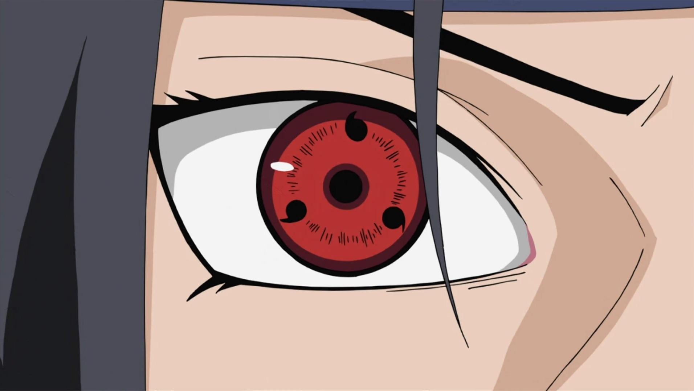

Nelle immagini soprastanti possiamo vedere in ordine : Obito, Shisui, Itachi, Sasuke, Madara e Ozuna (Uchiha)
CLAN UCHIHA
SASUKE E ITACHI
ALTRI
Il Clan Uchiha è uno dei grandi clan del Villaggio della Foglia (un Villaggio dell'anime "Naruto"), ma attualmente quasi estinto dopo la notte del massacro. Il Clan Uchiha discende da Indra Otsutsuki, il figlio maggiore dell'Eremita delle Sei Vie della Trasmigrazione che ereditò dal padre i suoi "occhi", il potente chakra e l'energia spirituale.
La Squadra di Polizia della Foglia Konoha "Forza di Polizia Militare del Villaggio della Foglia") è un corpo di polizia militare del Villaggio della Foglia. Anche se prima si credeva fosse stato un membro del Clan Uchiha a fondare l'organizzazione, in realtà è stato il Secondo Hokage, Tobirama Senju, a farlo ed affidato al clan come segno di fiducia e buona fede tra il Clan Senju e gli Uchiha.
Danzo Shimura è considerato il ninja più militarista e guerrafondaio di Konoha. Inizialmente si pensava che avesse perso un braccio e l'occhio destro, successivamente, dopo aver rimosso le bende, rivela di essersi trapiantato un occhio in possesso dello Sharingan appartenuto a Shisui Uchiha. Più tardi, viene mostrato che anche il braccio destro era ricoperto da dieci Sharingan.

Lo Sharingan è un'Arte Oculare in possesso del Clan Uchiha e fa parte delle Tre Grandi Arti Oculari insieme al Rinnegan e al Byakugan. Esteticamente lo Sharingan si presenta come un occhio con una colorazione tendente al rosso in cui vi sono i tomoe disposti attorno all'iride e alla pupilla, per un numero massimo di 3 tomoe partendo da uno per occhio. Ogni tomoe ha uno scopo diverso. A seconda del numero di tomoe lo sharingan dell'utilizzatore disporrà di diverse abilità:
la precognizione dei movimenti futuri compiuti dagli avversari, una sorta di visione del futuro;
la visione dello scorrere del chakra attraverso i corpi (anche se non al livello del Byakugan);
la possibilità di copiare varie tecniche dagli avversari (non funziona con abilità innate).
Lo Sharingan in definitiva potenzia i riflessi, permettendo di seguire oggetti a grande velocità e predirne quasi la traiettoria, per evitarli, se non troppo rapidi (la facilità dipende anche dalle capacità fisiche dell'utilizzatore). La sua preveggenza si estende soprattutto ai movimenti degli avversari, visualizzandoli come una specie di immagine al rallentatore, che consente di individuare il punto in cui andranno a colpire: questo è un processo che deriva dalla capacità di lettura degli impulsi neuro-muscolari dell'avversario, che permette di copiare le tecniche e prevedere gli attacchi. Infatti è grazie a questo processo di lettura degli impulsi che lo sharingan può prevedere i movimenti e gli attacchi dell'avversario.